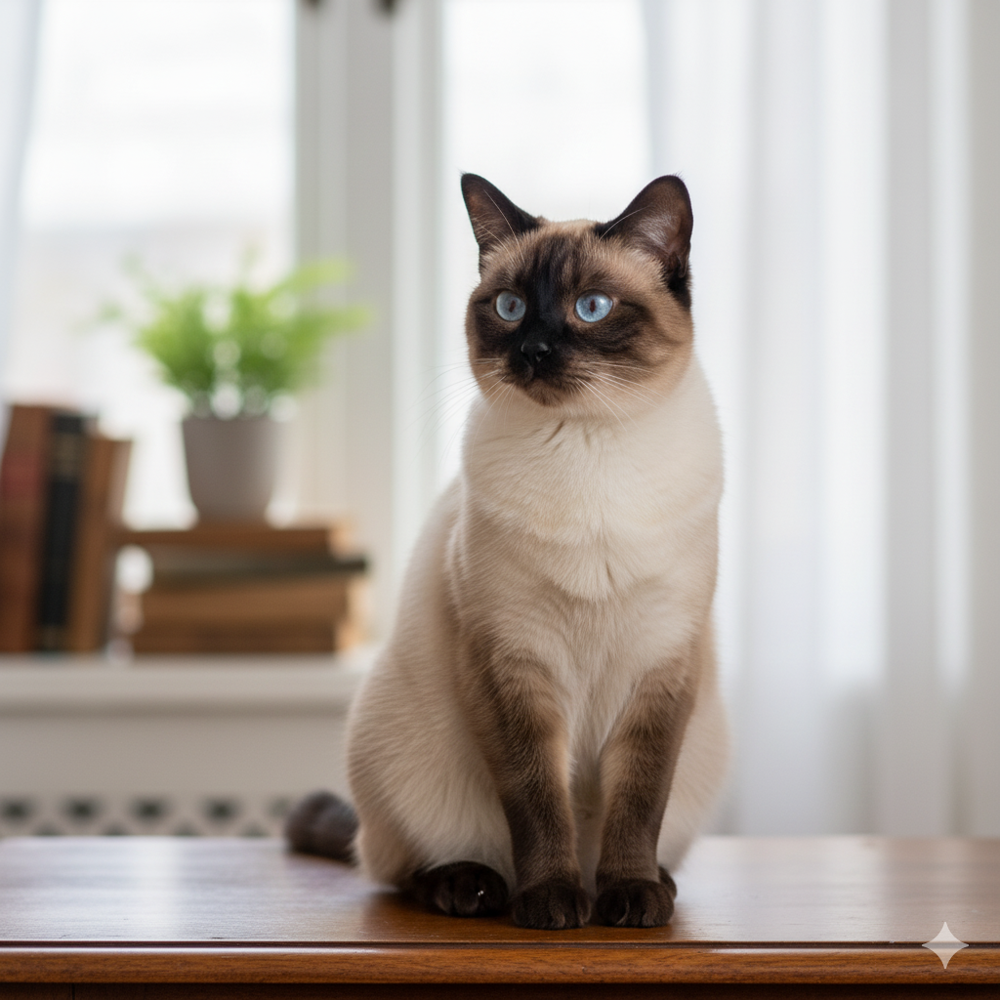

Gatos: Independentes e Afetuosos
Gatos são conhecidos por sua independência, mas também são extremamente carinhosos e companheiros. Adaptam-se bem a apartamentos e são muito higiênicos.
Itens Essenciais para um Gato
- Caixa de areia
- Arranhador
- Brinquedos interativos
- Ração de qualidade
- Fonte de água (eles adoram água corrente)